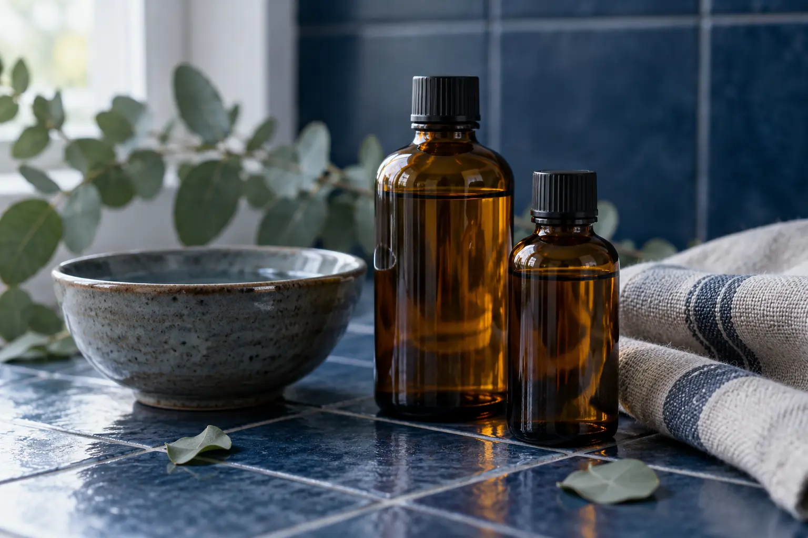

Aromaterapinis masažas: naudojamos priemonės, kvapas ir komfortas
Autorius: Madbeauty redakcija · 2026 m. gruodžio 24 d. 10:00 Lietuvos laiku
Sužinokite, ką gali reikšti aromaterapinio masažo pavadinimas, kaip atskirti masažo darbą nuo priemonės ir papildomų ritualo dalių, ir ką palyginti prieš renkantis.

Aromaterapinis masažas paprastai reiškia masažą, kurio dalis yra aromatas arba aromatinė priemonė. Tačiau pavadinimas pats savaime nepasako, kokia kūno sritis masažuojama, kokia priemonė naudojama ar kas dar įeina į vizitą. Todėl verta atskirai įvertinti rankinio darbo dalį, kvapo ir priemonės naudojimą bei viso pasiūlymo trukmę.
Rankinio darbo dalis
Aromatas nenusako masažo apimties. Viename pasiūlyme gali būti įvardytas viso kūno masažas, kitame – konkreti sritis, o dar kitame aromatinis masažas gali būti didesnės programos dalis. Prieš lygindami paslaugas išsiaiškinkite, kiek laiko skiriama pačiam masažui ir kokia jo apimtis. Bendrą kategorijos paaiškinimą rasite „ Masažo gidas: kūno ir veido paslaugos, eiga bei kompetencijos ribos“.
Priemonė ir kvapas – du atskiri pasirinkimai
Aromaterapijos aprašymuose eteriniai aliejai gali būti naudojami kvapui arba kaip praskiesta priemonė odai; jie taip pat gali būti masažo dalis. Tai nepaaiškina, kokia konkreti priemonė bus naudojama konkrečiame vizite. NCCIH apžvalgoje taip pat nurodoma, kad patikimų tyrimų apie aromaterapijos naudą nemigai yra nedaug. Vien aromatinės priemonės pavadinimas neįrodo gydomojo poveikio. NCCIH aromaterapijos apžvalga
Jei kvapai jums nepatinka arba kelia klausimų, iš anksto pasiteiraukite, kokia priemonė bus naudojama, ar kvapas būtinas ir kokios yra pasirinkimo galimybės. Jei svarbus konkretus jautrumas ar sveikatos klausimas, vien paslaugos aprašo nepakanka individualiam tinkamumui nustatyti.
Kaip atskirti masažą nuo visos programos?
Programos trukmė gali apimti daugiau nei masažo laiką: pavyzdžiui, vonią, pėdų procedūrą ar poilsį. 2026 m. spalio 12 d. peržiūrėtame SPA VILNIUS pasiūlyme dviem nurodyta 105 min. programa už 295 Eur. Apraše įvardyta 15 min. vonia dviem, 60 min. aromaterapinis viso kūno masažas ir 30 min. pėdų masažas dviem, taip pat poilsis ir nurodyti patogumai. Tai vieno teikėjo konkrečios datos meniu pavyzdys, ne rinkos kaina ar Madbeauty pasiūla. Aprašas nepatvirtina, ar poilsio laikas įskaičiuotas į 105 min., ar kaip suderinamas dviejų žmonių aptarnavimas. SPA VILNIUS programos aprašas
Palyginimas pagal tai, ko ieškote
Įsivaizduokite du skirtingus poreikius. Vienas žmogus nori tik masažo ir pageidauja vengti kvapo; kitas ieško bendros SPA programos, kurioje masažas derinamas su kitomis dalimis. Vien užrašas „aromaterapinis masažas“ neleidžia suprasti, ar kuris nors pasiūlymas tiks: reikia palyginti konkrečią masažo apimtį, priemonės naudojimą ir programos sudėtį.
- Masažas: kokia sritis masažuojama ir kiek laiko skiriama pačiam masažui?
- Priemonė: ar nurodyta, kas naudojama ir kaip į pasiūlymą įtrauktas kvapas?
- Programa: ar nurodyta bendra trukmė ir kurios papildomos dalys į ją įeina?
- Komfortas: ką daryti, jei nenorite kvapo arba norite iš anksto aptarti naudojamą priemonę?
Procedūrų aprašai kataloge: Aromaterapinis masažas. Miestą ir realaus teikėjo pasiūlymą pasirinkite kataloge, kai tokia pasiūla pateikta.
Susiję gidai
Šaltiniai
- NCCIH · aromaterapijos ribos · www.nccih.nih.gov
- SPA VILNIUS · SPA poilsis dviese · www.spavilnius.lt